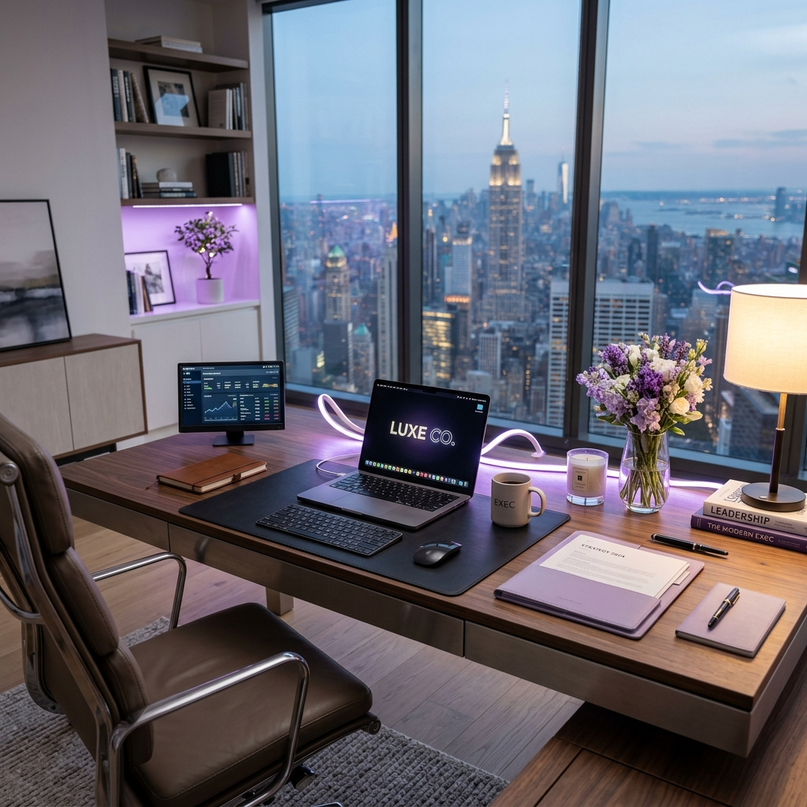

Elevated Support for Visionaries
Your time is finite.
Your potential shouldn't be.
We provide elite administrative partnership to founders and executives, transforming chaos into streamlined, scalable workflows.
